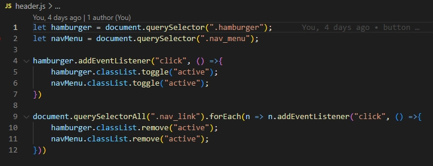

Tema 6
Eksamen på 1. semester består af mit portfolio website, samt en individuel mundtlig præsentation. Her vil du kunne se og læse dig frem til proccessen for at lave mit portfoliohjemmeside.
Idégenerering & Design
Det første jeg gjorde, før jeg startede på noget, var at læse opgaven grundigt igennem, så jeg fik en ordentlig forståelse af alle krav og kunne sætte et mål for mig selv. Umiddelbart sagde jeg til mig selv at jeg skulle lave the bare minimum, så jeg ikke overvældede mig selv og overarbejdede mit hoved.
PDF'en med information om eksamen havde nogle portfolioer fra tidligere semester, som jeg med det samme fik noget inspiration af. Jeg kom op med 2 forskellige moodboards, den ene blev jeg enig med mig selv om, nok ville tage for lang tid at lave, så jeg forsatte med den anden, som er moodboardet for mit nuværende portfolioside.
Jeg blev inspireret af min prototype på tema 3, og tænkte jeg kunne lave noget der mindede om, men i dark-version. Siden skulle være simpel, men stadig spændende at kigge på og noget der ville fange øjet. Jeg tog stor brug af gestaltlovenes basiske regler: Law of proximity, Law of similarity, Law of continuity, etc.
Da jeg vidste hvad jeg ville have begyndte jeg at lave en wireframe og en prototype.
Proces
Jeg gik igang med at lave den basiske HTML og CSS, dvs. fonte, farver, størrelser, margen, samt sider jeg vidste var et krav. Jeg var fokuseret på at arbejde mobile first og arbejde med web efterfølgende, da det har været en stor fejl jeg ikke har gjort med andre opgaver. Efter gik jeg igang med at implementere en burgermenu - efter en del mislykkede forsøg - endte jeg med at se en youtube video og lavede min helt egen. På den her måde fik jeg nemt Javascript med, som jeg før ikke var sikker på hvordan jeg skulle.
